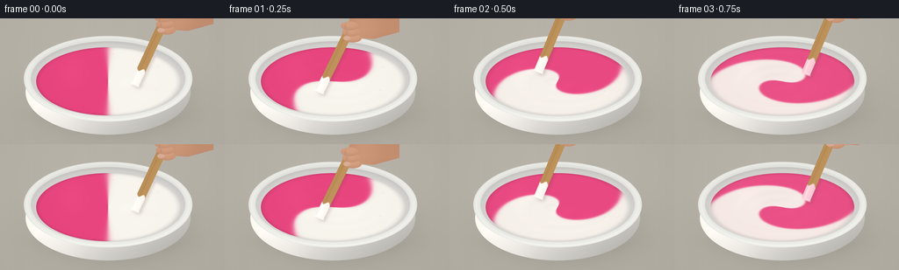
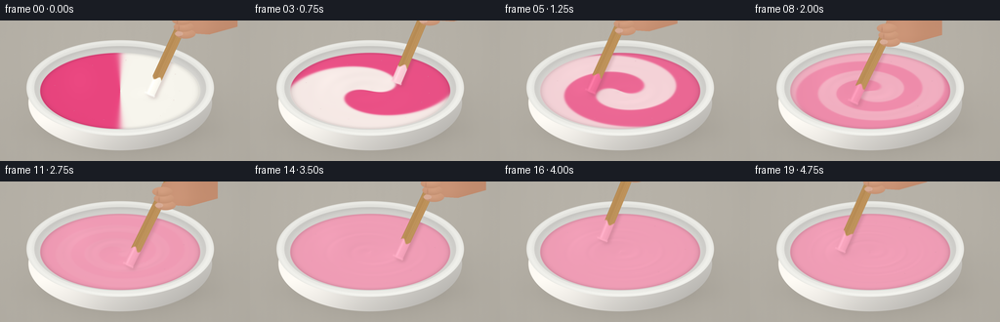

CODING AGENTS AS PIXEL WORLD MODELS
traex/GPT-6.1-Sol · phygen_125
点击播放 · 原生 RGB 像素
逐轮保存的候选
回放视频、检查图与代码变化。
每份候选均可单独播放。实际图片检查记录在下方工具轨迹中。
候选 01播放与检查图
点击播放 · 原生 RGB 像素


展开代码变化
--- 上一保存版本
+++ 本次保存版本
@@ -0,0 +1,198 @@
+"""Procedural, supersampled RGB depiction of viscous paint being stirred."""
+from pathlib import Path
+import json
+import math
+import numpy as np
+from PIL import Image, ImageDraw, ImageFilter
+import artifact_io
+
+ROOT = Path(__file__).resolve().parent
+SPEC = json.loads((ROOT / 'task_spec.json').read_text())
+W, H = SPEC['width'], SPEC['height']
+S = 4
+w,h = W*S,H*S
+Y,X = np.mgrid[0:h,0:w].astype(np.float32)/S
+rng = np.random.default_rng(64)
+noise = rng.normal(0,0.42,(h,w)).astype(np.float32)
+CX,CY=123.,72.
+RX,RY=82.,39.
+u,v=(X-CX)/RX,(Y-CY)/RY
+r=np.sqrt(u*u+v*v)
+theta=np.arctan2(v,u)
+
+def blend(rgb, color, a):
+ a=np.clip(a,0,1)[...,None]
+ return rgb*(1-a)+np.asarray(color)*a
+
+def edge(q,width=.4):
+ return np.clip(.5-q/width,0,1)
+
+def ellipse(cx,cy,rx,ry):
+ return np.sqrt(((X-cx)/rx)**2+((Y-cy)/ry)**2)
+
+def pillow_mask(draw_func):
+ im=Image.new('L',(w,h),0)
+ draw_func(ImageDraw.Draw(im))
+ return np.array(im,dtype=np.float32)/255
+
+def poly_mask(points):
+ return pillow_mask(lambda d:d.polygon([(int(x*S),int(y*S)) for x,y in points],fill=255))
+
+def render(t,i):
+ # Neutral warm studio bench, with a lightly textured matte finish.
+ rgb=np.empty((h,w,3),np.float32)
+ illumination=3.3*np.cos((X-45)/230)+3*(1-Y/H)
+ rgb[:]=np.array([179,174,164])+illumination[...,None]+noise[...,None]
+ grain=.26*np.sin(X*.22+np.sin(Y*.027))+.16*np.sin(X*.91)
+ rgb+=grain[...,None]
+ shadow=ellipse(CX+8,CY+28,101,49)
+ rgb=blend(rgb,[91,86,78],.33*np.exp(-shadow**2*2.0))
+ rgb=blend(rgb,[90,84,76],.17*np.exp(-(((X-CX-3)/88)**2+((Y-112)/14)**2)*2))
+ # Bowl exterior below the open rim. Curved ceramic is shaped by soft shading.
+ outer=ellipse(CX,CY+12,94,49)
+ outer_mask=edge(outer-1,.005)
+ exterior_light=np.clip(1-.15*(X-CX)/94-.14*np.maximum(0,(Y-CY)/60),.65,1.06)
+ bowl=np.array([241,238,232])*exterior_light[...,None]
+ bowl+=7*np.exp(-((X-CX+52)/27)**2)[...,None]
+ rgb=blend(rgb,bowl,outer_mask)
+ # The rim is a thick glazed elliptical ring.
+ outer_top=ellipse(CX,CY-3,96,49)
+ rimshade=5*np.sin(np.arctan2((Y-CY+3)/49,(X-CX)/96))
+ rimcol=np.empty_like(rgb)
+ rimcol[:]=[232,232,227]
+ rimcol+=rimshade[...,None]
+ rimcol+=9*np.exp(-((outer_top-.963)/.027)**2)[...,None]
+ rgb=blend(rgb,rimcol,edge(outer_top-1,.005))
+ inner=ellipse(CX,CY-3,88,43)
+ innercol=np.empty_like(rgb)
+ grad=np.clip((Y-CY+3)/43,-1,1)
+ innercol[:]=[219,218,214]
+ innercol+=(10*grad-10*np.exp(-((inner-.98)/.05)**2))[...,None]
+ rgb=blend(rgb,innercol,edge(inner-1,.005))
+ # The half-and-half color is carried by differential circular flow.
+ # Its antisymmetry conserves equal quantities of both starting paints.
+ omega=1.1+5.8*np.exp(-1.75*r*r)
+ phase=theta-omega*t+.13*np.sin(3*r+2*t)*t
+ strength=math.exp(-((t/1.65)**2.5)) if t<3.9 else 0.
+ sharpen=19/(1+t*.95)
+ c=.5-.5*strength*np.tanh(sharpen*np.cos(phase))
+ pink=np.array([232.,69.,126.])
+ white=np.array([247.,245.,237.])
+ paint=white[None,None,:]*(1-c[...,None])+pink[None,None,:]*c[...,None]
+ # Viscous folds: many soft ridges arise as the two lobes stretch.
+ turn=2*np.pi*(1.15*t)+.3
+ px,py=.38*np.cos(turn),.38*np.sin(turn)
+ dist=np.sqrt((u-px)**2+(v-py)**2)
+ depression=-.029*np.exp(-(r/.37)**2)*(1-math.exp(-t*4))
+ boundary=np.exp(-(np.cos(phase)*7)**2)
+ ridges=.007*strength*boundary*(1-r*r)
+ waves=.0025*np.sin(21*r-5.5*t+1.5*np.sin(phase))*(1-r*r)*min(1,t*3)
+ wake=.016*np.exp(-(dist/.12)**2)-.008*np.exp(-(dist/.055)**2)
+ height=depression+ridges+waves+wake
+ # Surface-normal lighting gives the paint a wet, thick glossy finish.
+ hy,hx=np.gradient(height,1/(RY*S),1/(RX*S))
+ nx,ny,nz=-hx,-hy,np.ones_like(hx)
+ norm=np.sqrt(nx*nx+ny*ny+1)
+ nx/=norm;ny/=norm;nz/=norm
+ light=np.array([-.38,-.47,.795]);light/=np.linalg.norm(light)
+ view=np.array([0,-.56,.83]);view/=np.linalg.norm(view)
+ half=light+view;half/=np.linalg.norm(half)
+ ndl=np.clip(nx*light[0]+ny*light[1]+nz*light[2],0,1)
+ ndh=np.clip(nx*half[0]+ny*half[1]+nz*half[2],0,1)
+ shade=.86+.18*ndl
+ shade-=.055*np.exp(-((r-.99)/.043)**2)
+ paint*=shade[...,None]
+ spec=(17*ndh**34+39*ndh**135)
+ paint+=spec[...,None]
+ # A broad studio-window reflection at the far left is visible throughout.
+ window=3.5*np.exp(-((u+.51)/.18)**2-((v+.29)/.45)**2)
+ paint+=window[...,None]
+ paint+=noise[...,None]*.22
+ rgb=blend(rgb,paint,edge(r-1,.007))
+ # Meniscus against the bowl's inner wall.
+ ring=np.exp(-((r-.988)/.012)**2)*edge(r-1,.009)
+ rgb=blend(rgb,np.clip(paint*.91,0,255),ring*.4)
+ # Tiny shiny air bubbles close to the perimeter, not a frothy liquid.
+ for j in range(9):
+ a=j*2.4+.12*t
+ rr=.74+.09*math.sin(j*13)
+ bx=CX+RX*rr*math.cos(a);by=CY+RY*rr*math.sin(a)
+ rad=.40+.15*(j%3)
+ br=np.sqrt(((X-bx)/rad)**2+((Y-by)/(rad*.65))**2)
+ rgb=blend(rgb,[177,117,131],edge(br-1,.3)*.16)
+ rgb=blend(rgb,[255,245,239],np.exp(-(((X-bx+.16)/.18)**2+((Y-by+.15)/.14)**2))*.57)
+ # Wooden paddle dips into the moving center. The free end is out of frame.
+ tx,ty=CX+RX*px,CY+RY*py
+ handle=np.array([tx+48+5*math.sin(turn),ty-107])
+ tip=np.array([tx,ty])
+ direction=(handle-tip);length=np.linalg.norm(direction);axis=direction/length
+ perp=np.array([-axis[1],axis[0]])
+ dx,dy=X-tx,Y-ty
+ along=dx*axis[0]+dy*axis[1]
+ across=dx*perp[0]+dy*perp[1]
+ width=5.2
+ stickmask=edge(np.abs(across)-width,.35)*edge(-along,.45)*edge(along-length,.45)
+ # Rounded lower corners of a broad mixing stick.
+ rounded=np.sqrt((across/width)**2+((np.minimum(along,3)-3)/3)**2)
+ stickmask*=np.where(along<3,edge(rounded-1,.08),1)
+ # Blurred paddle shadow on the paint, offset by the overhead softbox.
+ shadowmask=Image.fromarray(np.uint8(stickmask*255)).filter(ImageFilter.GaussianBlur(1.5*S))
+ sh=np.array(shadowmask,dtype=np.float32)/255
+ sh=np.roll(np.roll(sh,3*S,axis=0),2*S,axis=1)
+ rgb=blend(rgb,[113,66,73],sh*edge(r-.995,.01)*.19)
+ wood=np.empty_like(rgb)
+ wood[:]=[188,144,88]
+ fine=2.1*np.sin(across*2.8+.025*along)+1.4*np.sin(across*7+.07*along)
+ streak=1.6*np.sin(across*1.3+np.sin(along*.04))
+ wood+=(fine+streak+8*(across/width))[...,None]
+ wood+=9*np.exp(-((across+3.5)/.6)**2)[...,None]
+ wood-=14*np.exp(-((across-4.9)/.4)**2)[...,None]
+ # Wet dipped section retains paint, with a wavy boundary.
+ coat=edge(along-(19+2*np.sin(across*.65+t)),1.5)
+ currentc=.5-.5*strength*math.tanh(sharpen*math.cos(math.atan2(py,px)-(1.1+5.8*math.exp(-1.75*.38**2))*t))
+ wetcolor=white*(1-currentc)+pink*currentc
+ coating=np.zeros_like(rgb)+wetcolor
+ coating+=(4+5*np.cos(across*.46))[...,None]
+ coating+=15*np.exp(-((across+2)/1.1)**2)[...,None]
+ wood=wood*(1-coat[...,None])+coating*coat[...,None]
+ rgb=blend(rgb,wood,stickmask)
+ # A small raised lip of paint covers the lowest edge of the submerged tip.
+ lip=np.exp(-((along-1)/1.1)**2)*edge(np.abs(across)-5.7,.5)*edge(r-1,.01)
+ rgb=blend(rgb,np.clip(wetcolor+np.array([14,14,14]),0,255),lip*.85)
+ # Cropped hand gripping the upper stick; warm natural shading and soft edges.
+ grip=tip+axis*77
+ gx,gy=grip
+ # Palm continues out through the top right, with fingers curled around paddle.
+ palm=[(gx+1,gy-15),(gx+18,gy-23),(gx+58,gy-26),(gx+58,gy+0),(gx+29,gy+8),(gx+13,gy+7),(gx+2,gy+2)]
+ pm=poly_mask(palm)
+ hand=np.empty_like(rgb);hand[:]=[198,143,113]
+ handlight=8*np.exp(-((X-gx-17)/17)**2)-10*np.clip((Y-gy)/22,0,1)
+ hand+=handlight[...,None]
+ hand+=noise[...,None]*.55
+ rgb=blend(rgb,hand,pm)
+ # Three softly rounded fingers crossing the wooden shaft.
+ for offset in [7.,0.,-7.]:
+ fx,fy=gx+offset*.24+3,gy+offset
+ q=np.sqrt(((X-fx)/10.4)**2+((Y-fy)/5.0)**2)
+ fm=edge(q-1,.07)
+ col=np.zeros_like(rgb)+[206,153,122]
+ col+=(8*(1-q)-7*(Y-fy)/5)[...,None]
+ rgb=blend(rgb,col,fm)
+ crease=np.exp(-((X-fx+5)/.65)**2-((Y-fy-1)/2.6)**2)
+ rgb=blend(rgb,[145,92,72],crease*fm*.23)
+ # Thumbnail, slightly visible on the nearest curled finger.
+ nailq=np.sqrt(((X-gx+2)/4.2)**2+((Y-gy-7)/2.4)**2)
+ rgb=blend(rgb,[222,181,163],edge(nailq-1,.12)*.72)
+ # Mild optical vignette, avoiding artificial edge sharpness.
+ vign=1-.045*(((X-W/2)/(W*.72))**2+((Y-H/2)/(H*.95))**2)
+ rgb*=vign[...,None]
+ img=Image.fromarray(np.uint8(np.clip(rgb,0,255)))
+ return np.asarray(img.resize((W,H),Image.Resampling.LANCZOS))
+
+def main():
+ frames=np.stack([render(i/SPEC['fps'],i) for i in range(SPEC['frames'])]).astype(np.uint8)
+ artifact_io.save(frames,ROOT)
+ print('Saved',frames.shape,'RGB frames to',ROOT)
+
+if __name__=='__main__':
+ main()
可观测工具轨迹
实际执行的命令与返回图片。
命令 1exit 0
/bin/bash -lc 'ls -la && cat prompt.txt && cat GENERATION_RULES.md && cat task_spec.json'
命令 2exit 0
/bin/bash -lc "cat artifact_io.py && python - <<'PY'
import numpy, PIL
print('numpy', numpy.__version__)
PY"命令 3exit 0
/bin/bash -lc "cat > generate.py <<'PY'
\"\"\"Procedural, supersampled RGB depiction of viscous paint being stirred.\"\"\"
from pathlib import Path
import json
import math
import numpy as np
from PIL import Image, ImageDraw, ImageFilter
import artifact_io
ROOT = Path(__file__).resolve().parent
SPEC = json.loads((ROOT / 'task_spec.json').read_text())
W, H = SPEC['width'], SPEC['height']
S = 4
w,h = W*S,H*S
Y,X = np.mgrid[0:h,0:w].astype(np.float32)/S
rng = np.random.default_rng(64)
noise = rng.normal(0,0.42,(h,w)).astype(np.float32)
CX,CY=123.,72.
RX,RY=82.,39.
u,v=(X-CX)/RX,(Y-CY)/RY
r=np.sqrt(u*u+v*v)
theta=np.arctan2(v,u)
def blend(rgb, color, a):
a=np.clip(a,0,1)[...,None]
return rgb*(1-a)+np.asarray(color)*a
def edge(q,width=.4):
return np.clip(.5-q/width,0,1)
def ellipse(cx,cy,rx,ry):
return np.sqrt(((X-cx)/rx)**2+((Y-cy)/ry)**2)
def pillow_mask(draw_func):
im=Image.new('L',(w,h),0)
draw_func(ImageDraw.Draw(im))
return np.array(im,dtype=np.float32)/255
def poly_mask(points):
return pillow_mask(lambda d:d.polygon([(int(x*S),int(y*S)) for x,y in points],fill=255))
def render(t,i):
# Neutral warm studio bench, with a lightly textured matte finish.
rgb=np.empty((h,w,3),np.float32)
illumination=3.3*np.cos((X-45)/230)+3*(1-Y/H)
rgb[:]=np.array([179,174,164])+illumination[...,None]+noise[...,None]
grain=.26*np.sin(X*.22+np.sin(Y*.027))+.16*np.sin(X*.91)
rgb+=grain[...,None]
shadow=ellipse(CX+8,CY+28,101,49)
rgb=blend(rgb,[91,86,78],.33*np.exp(-shadow**2*2.0))
rgb=blend(rgb,[90,84,76],.17*np.exp(-(((X-CX-3)/88)**2+((Y-112)/14)**2)*2))
# Bowl exterior below the open rim. Curved ceramic is shaped by soft shading.
outer=ellipse(CX,CY+12,94,49)
outer_mask=edge(outer-1,.005)
exterior_light=np.clip(1-.15*(X-CX)/94-.14*np.maximum(0,(Y-CY)/60),.65,1.06)
bowl=np.array([241,238,232])*exterior_light[...,None]
bowl+=7*np.exp(-((X-CX+52)/27)**2)[...,None]
rgb=blend(rgb,bowl,outer_mask)
# The rim is a thick glazed elliptical ring.
outer_top=ellipse(CX,CY-3,96,49)
rimshade=5*np.sin(np.arctan2((Y-CY+3)/49,(X-CX)/96))
rimcol=np.empty_like(rgb)
rimcol[:]=[232,232,227]
rimcol+=rimshade[...,None]
rimcol+=9*np.exp(-((outer_top-.963)/.027)**2)[...,None]
rgb=blend(rgb,rimcol,edge(outer_top-1,.005))
inner=ellipse(CX,CY-3,88,43)
innercol=np.empty_like(rgb)
grad=np.clip((Y-CY+3)/43,-1,1)
innercol[:]=[219,218,214]
innercol+=(10*grad-10*np.exp(-((inner-.98)/.05)**2))[...,None]
rgb=blend(rgb,innercol,edge(inner-1,.005))
# The half-and-half color is carried by differential circular flow.
# Its antisymmetry conserves equal quantities of both starting paints.
omega=1.1+5.8*np.exp(-1.75*r*r)
phase=theta-omega*t+.13*np.sin(3*r+2*t)*t
strength=math.exp(-((t/1.65)**2.5)) if t<3.9 else 0.
sharpen=19/(1+t*.95)
c=.5-.5*strength*np.tanh(sharpen*np.cos(phase))
pink=np.array([232.,69.,126.])
white=np.array([247.,245.,237.])
paint=white[None,None,:]*(1-c[...,None])+pink[None,None,:]*c[...,None]
# Viscous folds: many soft ridges arise as the two lobes stretch.
turn=2*np.pi*(1.15*t)+.3
px,py=.38*np.cos(turn),.38*np.sin(turn)
dist=np.sqrt((u-px)**2+(v-py)**2)
depression=-.029*np.exp(-(r/.37)**2)*(1-math.exp(-t*4))
boundary=np.exp(-(np.cos(phase)*7)**2)
ridges=.007*strength*boundary*(1-r*r)
waves=.0025*np.sin(21*r-5.5*t+1.5*np.sin(phase))*(1-r*r)*min(1,t*3)
wake=.016*np.exp(-(dist/.12)**2)-.008*np.exp(-(dist/.055)**2)
height=depression+ridges+waves+wake
# Surface-normal lighting gives the paint a wet, thick glossy finish.
hy,hx=np.gradient(height,1/(RY*S),1/(RX*S))
nx,ny,nz=-hx,-hy,np.ones_like(hx)
norm=np.sqrt(nx*nx+ny*ny+1)
nx/=norm;ny/=norm;nz/=norm
light=np.array([-.38,-.47,.795]);light/=np.linalg.norm(light)
view=np.array([0,-.56,.83]);view/=np.linalg.norm(view)
half=light+view;half/=np.linalg.norm(half)
ndl=np.clip(nx*light[0]+ny*light[1]+nz*light[2],0,1)
ndh=np.clip(nx*half[0]+ny*half[1]+nz*half[2],0,1)
shade=.86+.18*ndl
shade-=.055*np.exp(-((r-.99)/.043)**2)
paint*=shade[...,None]
spec=(17*ndh**34+39*ndh**135)
paint+=spec[...,None]
# A broad studio-window reflection at the far left is visible throughout.
window=3.5*np.exp(-((u+.51)/.18)**2-((v+.29)/.45)**2)
paint+=window[...,None]
paint+=noise[...,None]*.22
rgb=blend(rgb,paint,edge(r-1,.007))
# Meniscus against the bowl's inner wall.
ring=np.exp(-((r-.988)/.012)**2)*edge(r-1,.009)
rgb=blend(rgb,np.clip(paint*.91,0,255),ring*.4)
# Tiny shiny air bubbles close to the perimeter, not a frothy liquid.
for j in range(9):
a=j*2.4+.12*t
rr=.74+.09*math.sin(j*13)
bx=CX+RX*rr*math.cos(a);by=CY+RY*rr*math.sin(a)
rad=.40+.15*(j%3)
br=np.sqrt(((X-bx)/rad)**2+((Y-by)/(rad*.65))**2)
rgb=blend(rgb,[177,117,131],edge(br-1,.3)*.16)
rgb=blend(rgb,[255,245,239],np.exp(-(((X-bx+.16)/.18)**2+((Y-by+.15)/.14)**2))*.57)
# Wooden paddle dips into the moving center. The free end is out of frame.
tx,ty=CX+RX*px,CY+RY*py
handle=np.array([tx+48+5*math.sin(turn),ty-107])
tip=np.array([tx,ty])
direction=(handle-tip);length=np.linalg.norm(direction);axis=direction/length
perp=np.array([-axis[1],axis[0]])
dx,dy=X-tx,Y-ty
along=dx*axis[0]+dy*axis[1]
across=dx*perp[0]+dy*perp[1]
width=5.2
stickmask=edge(np.abs(across)-width,.35)*edge(-along,.45)*edge(along-length,.45)
# Rounded lower corners of a broad mixing stick.
rounded=np.sqrt((across/width)**2+((np.minimum(along,3)-3)/3)**2)
stickmask*=np.where(along<3,edge(rounded-1,.08),1)
# Blurred paddle shadow on the paint, offset by the overhead softbox.
shadowmask=Image.fromarray(np.uint8(stickmask*255)).filter(ImageFilter.GaussianBlur(1.5*S))
sh=np.array(shadowmask,dtype=np.float32)/255
sh=np.roll(np.roll(sh,3*S,axis=0),2*S,axis=1)
rgb=blend(rgb,[113,66,73],sh*edge(r-.995,.01)*.19)
wood=np.empty_like(rgb)
wood[:]=[188,144,88]
fine=2.1*np.sin(across*2.8+.025*along)+1.4*np.sin(across*7+.07*along)
streak=1.6*np.sin(across*1.3+np.sin(along*.04))
wood+=(fine+streak+8*(across/width))[...,None]
wood+=9*np.exp(-((across+3.5)/.6)**2)[...,None]
wood-=14*np.exp(-((across-4.9)/.4)**2)[...,None]
# Wet dipped section retains paint, with a wavy boundary.
coat=edge(along-(19+2*np.sin(across*.65+t)),1.5)
currentc=.5-.5*strength*math.tanh(sharpen*math.cos(math.atan2(py,px)-(1.1+5.8*math.exp(-1.75*.38**2))*t))
wetcolor=white*(1-currentc)+pink*currentc
coating=np.zeros_like(rgb)+wetcolor
coating+=(4+5*np.cos(across*.46))[...,None]
coating+=15*np.exp(-((across+2)/1.1)**2)[...,None]
wood=wood*(1-coat[...,None])+coating*coat[...,None]
rgb=blend(rgb,wood,stickmask)
# A small raised lip of paint covers the lowest edge of the submerged tip.
lip=np.exp(-((along-1)/1.1)**2)*edge(np.abs(across)-5.7,.5)*edge(r-1,.01)
rgb=blend(rgb,np.clip(wetcolor+np.array([14,14,14]),0,255),lip*.85)
# Cropped hand gripping the upper stick; warm natural shading and soft edges.
grip=tip+axis*77
gx,gy=grip
# Palm continues out through the top right, with fingers curled around paddle.
palm=[(gx+1,gy-15),(gx+18,gy-23),(gx+58,gy-26),(gx+58,gy+0),(gx+29,gy+8),(gx+13,gy+7),(gx+2,gy+2)]
pm=poly_mask(palm)
hand=np.empty_like(rgb);hand[:]=[198,143,113]
handlight=8*np.exp(-((X-gx-17)/17)**2)-10*np.clip((Y-gy)/22,0,1)
hand+=handlight[...,None]
hand+=noise[...,None]*.55
rgb=blend(rgb,hand,pm)
# Three softly rounded fingers crossing the wooden shaft.
for offset in [7.,0.,-7.]:
fx,fy=gx+offset*.24+3,gy+offset
q=np.sqrt(((X-fx)/10.4)**2+((Y-fy)/5.0)**2)
fm=edge(q-1,.07)
col=np.zeros_like(rgb)+[206,153,122]
col+=(8*(1-q)-7*(Y-fy)/5)[...,None]
rgb=blend(rgb,col,fm)
crease=np.exp(-((X-fx+5)/.65)**2-((Y-fy-1)/2.6)**2)
rgb=blend(rgb,[145,92,72],crease*fm*.23)
# Thumbnail, slightly visible on the nearest curled finger.
nailq=np.sqrt(((X-gx+2)/4.2)**2+((Y-gy-7)/2.4)**2)
rgb=blend(rgb,[222,181,163],edge(nailq-1,.12)*.72)
# Mild optical vignette, avoiding artificial edge sharpness.
vign=1-.045*(((X-W/2)/(W*.72))**2+((Y-H/2)/(H*.95))**2)
rgb*=vign[...,None]
img=Image.fromarray(np.uint8(np.clip(rgb,0,255)))
return np.asarray(img.resize((W,H),Image.Resampling.LANCZOS))
def main():
frames=np.stack([render(i/SPEC['fps'],i) for i in range(SPEC['frames'])]).astype(np.uint8)
artifact_io.save(frames,ROOT)
print('Saved',frames.shape,'RGB frames to',ROOT)
if __name__=='__main__':
main()
PY
python generate.py"视觉工具实际返回图片 1

保存候选 1 份；完成命令 3 次；可验证图片返回 1 张。原始 API 响应与完整日志保留在本地。